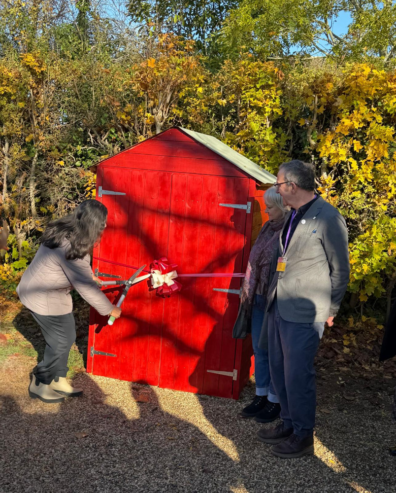

Community partnership news
A New Chapter for The Red Shed in Welwyn Garden City
The Red Shed has officially opened a new dementia-friendly garden at Watchlytes Primary School, bringing its wellbeing-focused gardening activities to Welwyn Garden City. The project is an exciting development for the charity as it expands beyond its original Stevenage site, creating more opportunities for people living with dementia and their carers to enjoy gardening, nature and social connection.
The launch brought together local representatives, partners, volunteers, supporters and future participants. The Welwyn Hatfield Dementia Friendly Community Partnership was pleased to be part of the occasion and to see this new community resource take shape.
We are pleased to share the following message from Derek Pritchard, Chief Executive Officer of The Red Shed, reflecting on the launch and the people who helped make it possible.
A message from The Red Shed
Last week, we were delighted to officially launch The Red Shed's new dementia-friendly garden at Watchlytes Primary School in Welwyn Garden City.
The occasion marked a significant milestone for our charity as we expand beyond our original Stevenage site to bring our wellbeing-focused gardening activities to more people living with dementia and their carers across Hertfordshire.
We were honoured to welcome Deputy Mayor Cllr Vaishali Shah, who officially opened the garden by cutting the ribbon, alongside Andrew Lewin MP, Cllr Kevin Bonavia, local partners, volunteers, supporters and future participants. It was particularly encouraging to see so many familiar faces from the WelHat Dementia Friendly Community Partnership, whose ongoing commitment to creating a more dementia-friendly community helps make initiatives like this possible.
The launch was an opportunity to celebrate not only a new garden but also the partnerships, community support and shared vision that have helped bring the project to life. Guests heard about our plans for the site and met members of our team.
At The Red Shed, we see every day the difference that gardening, nature and social connection can make to the lives of people living with dementia and their carers. We are excited to begin this next chapter in Welwyn Garden City and look forward to creating a welcoming space where people can connect, contribute and thrive.
I would like to thank everyone who attended the launch and everyone who has supported the project so far, particularly our volunteers, funders, partners, the team at Watchlytes Primary School and our colleagues across the WelHat Dementia Friendly Community Partnership. We look forward to welcoming our first participants and becoming an active part of the Welwyn Garden City community.
Derek Pritchard
Chief Executive Officer
The Red Shed

Local good news
Congratulations to Welwyn Grange on its national Dignity and Respect Award
Huge congratulations to Welwyn Grange care home with nursing in Welwyn Garden City, which has won the prestigious Dignity and Respect National Care Award at a ceremony at London's Park Plaza Ballroom. This is a wonderful achievement and a recognition of the home's commitment to treating every resident with dignity, respect and individuality.
The judges highlighted three particularly thoughtful approaches:
- Small-scale households: domestic-scale households of no more than 16 people, helping residents build friendships and feel part of a close-knit community.
- The Ashridge Apartments: thirteen dedicated suites that enable couples who need care to continue living together, preserving their relationships and independence while receiving tailored, nurse-led support.
- The #NoFacesFeatured campaign: a commitment not to use residents' faces in marketing materials or social media, protecting their privacy and digital identity.
The award comes during an especially successful period for Welwyn Grange. The home has also been recognised as the highest-rated care home in Hertfordshire out of 212 homes listed on carehome.co.uk, based on independent reviews from residents and their loved ones.
We are delighted to celebrate this national recognition of a local care home and the values at the heart of its work. Congratulations to the residents, families, colleagues and everyone at Welwyn Grange who has contributed to this achievement.
Read more:
Welwyn Online: Welwyn Garden City Care Home Wins National Dignity Award →
Welwyn Grange: its announcement of the award →
Dementia-friendly accreditation
Is your organisation on the Dementia Friendly Hertfordshire map?
Dementia Friendly Hertfordshire is a countywide initiative helping businesses, community groups and organisations make their spaces, services and activities more welcoming and accessible for people living with dementia, their families and carers.
If your organisation has already achieved accreditation, take a moment to check that it appears on the public Dementia Friendly Hertfordshire map. The map helps people affected by dementia find welcoming places and services across the county.
Check the accredited organisations map →
Not accredited yet? Businesses, charities, community groups and other public-facing organisations across Hertfordshire are encouraged to take part. The accreditation process offers practical guidance to help you review what you already do well and identify achievable ways to improve accessibility, communication and the experience of people affected by dementia.
Find out how to become an accredited partner →
Becoming dementia-friendly is an ongoing journey. By taking part, your organisation can demonstrate its commitment to inclusion and help make everyday community life more accessible for people living with dementia and those who support them.
The Dementia Friendly Hertfordshire initiative is led by Hertfordshire County Council in partnership with Memory Support Hertfordshire and the Hertfordshire Mental Health, Learning Disability and Neurodiversity Health and Care Partnership. Local dementia-friendly networks help support organisations on their accreditation journey.
Information
The Pegasus scheme
The Pegasus scheme from Hertfordshire Constabulary is for people who find it hard to communicate with the police. When you register, your pre-registered information is kept securely so that, if you need to contact the police, you do not have to repeat all your details.
People who have a disability or illness that may make communication difficult can register. You receive a Pegasus card and personal identification number (PIN). If you need to call the police, you can say “Pegasus” and give your PIN so your details can be accessed quickly. You can also show the card to a police officer, police staff member or other emergency services staff if you need help in person.
Registration is free. Details can be updated when needed, and you can choose to have your information shared with participating emergency services and local authorities.
Find out more about the Pegasus scheme →